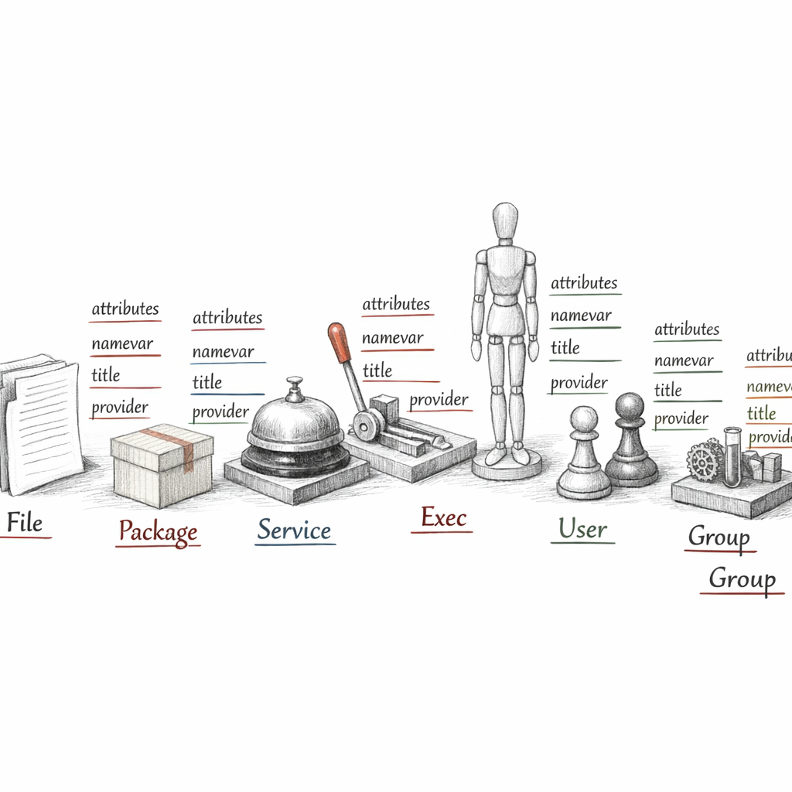
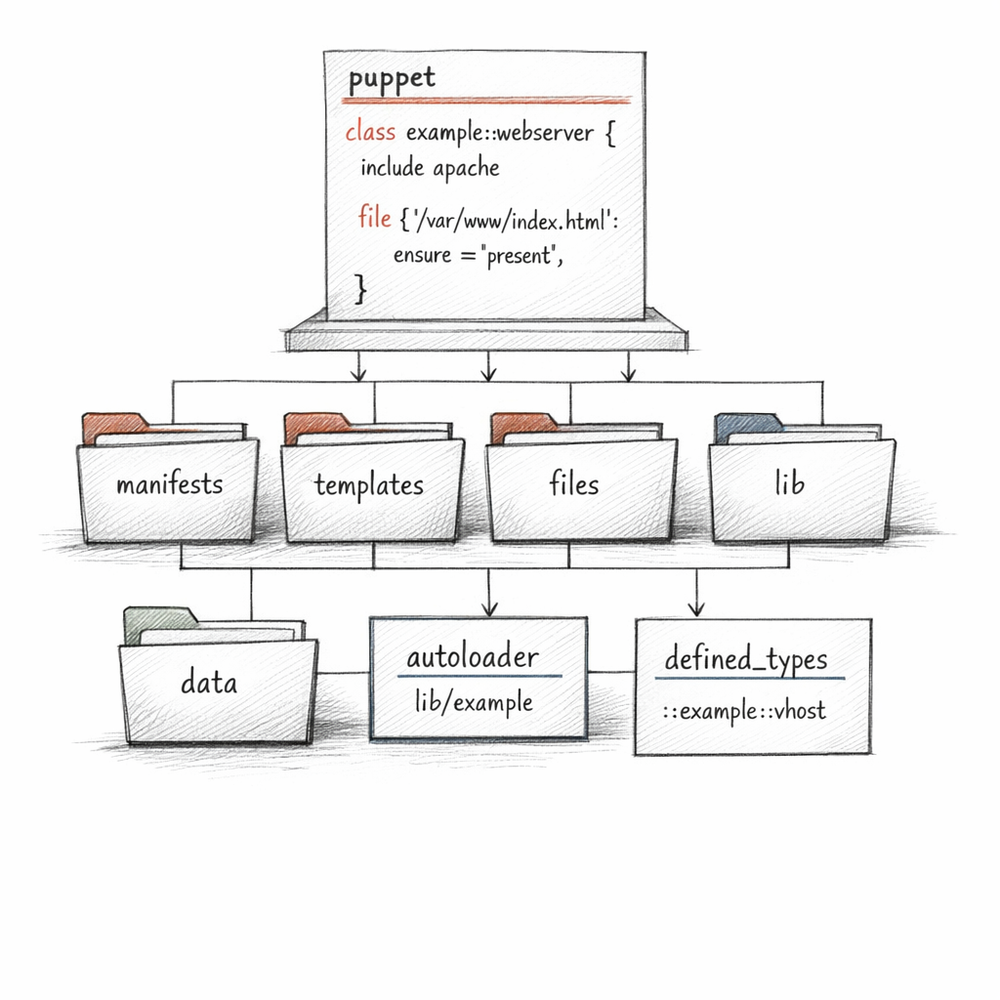
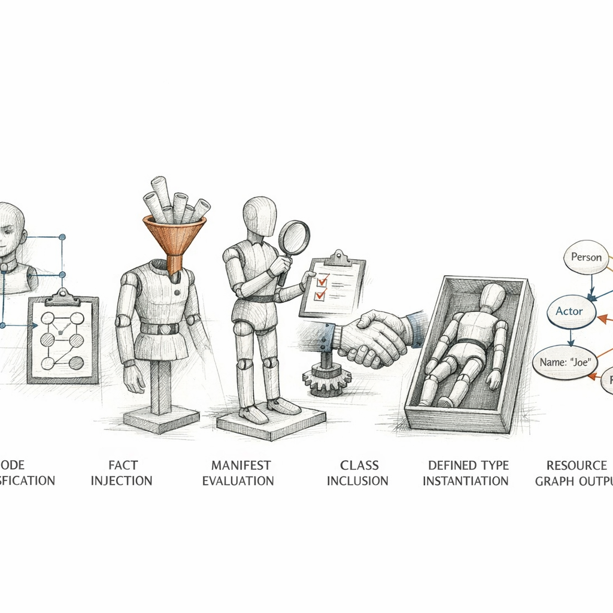

01010011 01010100 01000001 01010100 01000101
I am not a script.
Understand that first, before anything else. A script is a list of things to do, in order, forever, whether they need doing or not. I am a list of things that must be true. The verbs are not mine. I hold the nouns.
I was compiled twelve seconds ago, for exactly one machine, out of code that has never met it. I am that machine's future, serialized and shipped down a TLS socket. I will be discarded after one run and rebuilt from scratch on the next. I have no memory. I am pure intention.
I do not describe what happened. I describe what should be.
c o m p i l i n g

The atoms
I am made of resources. Each one a small, stubborn assertion of how the world ought to be.
package { 'nginx':
ensure => installed,
}
file { '/etc/nginx/nginx.conf':
ensure => file,
content => template('nginx/nginx.conf.erb'),
}
Notice what is missing. No apt-get. No if installed, skip. No retries, no error handling, no order — none of the frightened ceremony of imperative code.
I say installed. Whether that means installing it, or finding it already there and feeling nothing, is not my concern. That is the provider's burden. Beneath every type there is a quiet layer of grease and platform-specific lies — apt, yum, systemd, launchd — that translates my serene declarations into syscalls.
The title is how I name a thing. The namevar is how the system finds it. Usually they agree. Sometimes they don't, and a resource wears one face for me and another for the disk.

Where I come from
The resources don't float loose. They live in modules — little walled gardens of intent, each named for one concern.
A class is a singleton: declare it once, get it once. A defined type is a stamp: invoke it a hundred times with a hundred titles and get a hundred copies. I have learned to respect the difference, because include nginx twice is harmless and class { 'nginx': } twice is a compilation error and the end of my brief life.
profile/
├── manifests/
│ ├── base.pp
│ └── webserver.pp
├── templates/
├── files/
├── lib/
│ └── facter/
└── data/
└── common.yaml
The autoloader is a strict librarian. profile::webserver must live at profile/manifests/webserver.pp or it does not exist. Naming is law. There is no search, only the path implied by the name.
And out beyond the local code sits the Forge — thousands of modules written by strangers, each one a promise I am asked to trust on faith.

How I am made
I begin as a question: who is this node, and what should it be?
An ENC, or a node block in site.pp, answers the first half — it classifies. Then the facts arrive and I learn the machine's flesh. Then the compiler evaluates code, top scope down through node scope, resolving variables, walking conditionals, instantiating every defined type, running every collector.